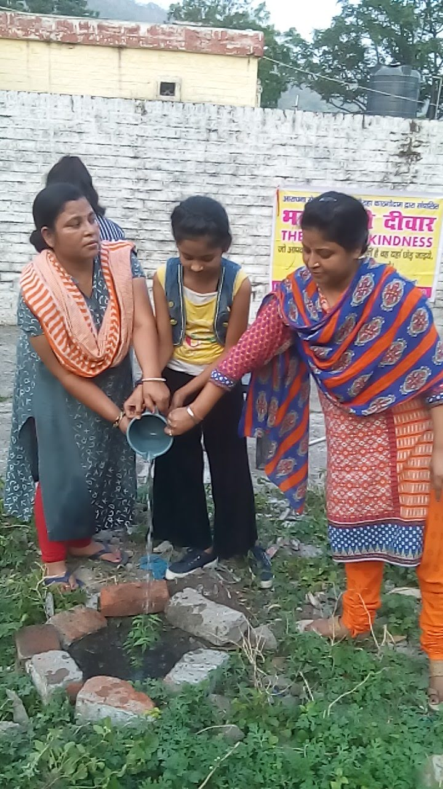
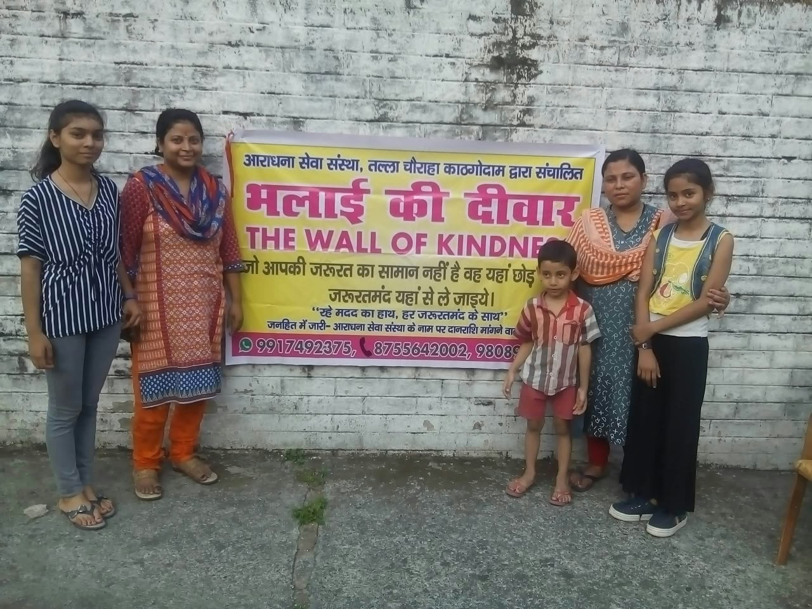

01
Environmental concerns
पर्यावरण संरक्षण
Work towards addressing environmental problems.
पर्यावरण की समस्याओं के निराकरण हेतु कार्य करना।
Working towards community welfare through charitable objectives that include environmental awareness, women’s skill development, education, art and public awareness.
पर्यावरण जागरूकता, महिला कौशल विकास, शिक्षा, कला और जन-जागरूकता सहित धर्मार्थ उद्देश्यों के माध्यम से समाज कल्याण की दिशा में कार्यरत।
A community-focused organisation with stated charitable and social welfare objectives.
धर्मार्थ एवं सामाजिक कल्याण के घोषित उद्देश्यों वाली जन-केंद्रित संस्था।
Aradhna Sewa Sanstha is identified in the provided document as a non-government organisation working in the field of social welfare. Its stated charitable objectives include environmental problem-solving, encouraging women’s cottage industries and skills, supporting education for children who lack access to education, promoting art and cultural awareness, and spreading awareness of sanitation, literacy, child nutrition and welfare schemes.
उपलब्ध दस्तावेज़ में आराधना सेवा संस्था को सामाजिक कल्याण के क्षेत्र में कार्यरत गैर-सरकारी संस्था के रूप में दर्शाया गया है। इसके घोषित धर्मार्थ उद्देश्यों में पर्यावरण संबंधी समस्याओं के समाधान, महिलाओं को कुटीर उद्योग और कौशल के लिए प्रोत्साहित करना, शिक्षा से वंचित बच्चों की सहायता, कला एवं सांस्कृतिक जागरूकता को बढ़ावा देना तथा स्वच्छता, साक्षरता, शिशु पोषण और कल्याणकारी योजनाओं के प्रति जागरूकता फैलाना शामिल है।
The details on this website are based on the document supplied for preparing the site. Please contact the organisation directly for confirmation or updates to official records.
इस वेबसाइट पर दी गई जानकारी उपलब्ध कराए गए दस्तावेज़ पर आधारित है। आधिकारिक अभिलेखों की पुष्टि या अद्यतन जानकारी के लिए संस्था से संपर्क करें।
The following objectives are summarised from the supplied document. They describe the organisation’s stated aims, not a claim that every activity is currently underway.
निम्नलिखित उद्देश्य उपलब्ध दस्तावेज़ के आधार पर प्रस्तुत किए गए हैं। ये संस्था के घोषित उद्देश्य हैं; इससे यह दावा नहीं किया जा रहा कि सभी गतिविधियाँ वर्तमान में संचालित हो रही हैं।
Work towards addressing environmental problems.
पर्यावरण की समस्याओं के निराकरण हेतु कार्य करना।
Encourage women to adopt cottage industries.
महिलाओं को कुटीर उद्योग अपनाने के लिए प्रोत्साहित करना।
Make efforts to provide women with sewing and embroidery training to support self-employment.
महिलाओं को स्वरोजगार के लिए सिलाई-कढ़ाई का प्रशिक्षण देने का प्रयास करना।
Provide training for economically disadvantaged women in making pickles, preserves (murabba) and savoury snacks (namkeen).
आर्थिक रूप से कमजोर महिलाओं को अचार, मुरब्बा और नमकीन बनाने का प्रशिक्षण देना।
Arrange free educational camps for children who lack access to education.
अशिक्षित बच्चों के लिए निःशुल्क शिक्षा शिविर की व्यवस्था करना।
Organise art exhibitions, lectures, fairs, art discussions, workshops and art camps at different places from time to time.
समय-समय पर विभिन्न स्थानों पर कला प्रदर्शनियाँ, व्याख्यान, मेले, कला संगोष्ठियाँ, कार्यशालाएँ और कला शिविर आयोजित करना।
Promote awareness in underserved urban and rural areas about cleanliness, literacy, family planning, child nutrition and government welfare schemes.
शहरी एवं ग्रामीण क्षेत्रों के पिछड़े इलाकों और मलिन बस्तियों में स्वच्छता, साक्षरता, परिवार नियोजन, शिशु पोषण तथा सरकारी कल्याणकारी योजनाओं के प्रति जागरूकता फैलाना।
Photos from Aradhna Sewa Sanstha's service activities.
आराधना सेवा संस्था की सेवा गतिविधियों की तस्वीरें।


If you would like to support Aradhna Sewa Sanstha, please contact the organisation using the official numbers below to confirm its authorised donation process before sending money.
यदि आप आराधना सेवा संस्था को सहयोग देना चाहते हैं, तो राशि भेजने से पहले नीचे दिए गए आधिकारिक नंबरों पर संपर्क करके संस्था की अधिकृत दान प्रक्रिया की पुष्टि करें।
No bank account, UPI ID or payment QR has been published here because verified donation details were not provided.
यहाँ बैंक खाता, UPI ID या payment QR प्रकाशित नहीं किया गया है, क्योंकि सत्यापित दान विवरण उपलब्ध नहीं कराए गए हैं।
Call NGO service numberNGO सेवा नंबर पर कॉल करेंAradhna Sewa Sanstha
Quarters No. 56/A, Railway Colony,
Kathgodam, District Nainital,
Uttarakhand, India
NGO Service Number: 9808929000
Sachiv / Secretary, Mr. Raj Gourh: 8755642002
Email / ईमेल: aradhnasewasanstha@gmail.com
A map link can be added after confirming the exact public location.
सटीक सार्वजनिक स्थान की पुष्टि के बाद मानचित्र लिंक जोड़ा जा सकता है।